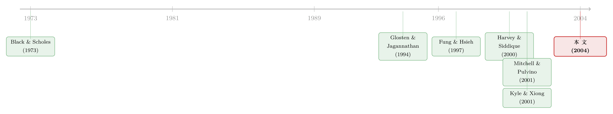

把对冲基金的高夏普，翻过来看：它其实在卖一份「市场保险」
本文读的是 Agarwal & Naik (2004, Review of Financial Studies)：一大批股票型对冲基金策略的收益，长得就像「在市场指数上卖了一份看跌期权」——平时稳稳收着权利金，一旦市场崩盘就要赔个底朝天。这种藏在左尾里的风险，被均值-方差框架完全忽略；作者用 均值-条件在险价值 (mean-conditional value-at-risk, M-CVaR) 框架证明，均值-方差最优组合对尾部损失的低估幅度可高达 54%。
1 一个太漂亮的成绩单
先看一组数字。1990 到 2000 年这十年里，HFR 的「事件套利 (event arbitrage)」对冲基金指数，月均收益 1.03%，标准差只有 1.32%。换算成年化，这意味着一个相当亮眼的夏普比率——波动小、收益稳，几乎是机构投资者梦寐以求的资产。「可转债套利 (convertible arbitrage)」也类似，月均 0.95%，标准差 1.01%。难怪哈佛、耶鲁的捐赠基金，CALPERS、安大略教师退休金这些「聪明钱」，会把越来越大的一块仓位押到对冲基金上。
但如果你只盯着均值和方差这两个数字，你就漏掉了真正要命的那一栏。
同样是这只「事件套利」指数，它的 偏度 (skewness) 是 −3.24，峰度 (kurtosis) 高达 17.18。这是什么概念？正态分布的偏度是 0、峰度是 3。一个偏度接近 −3.24、峰度 17 的分布，意味着它绝大多数月份都是不温不火的小赚，但偶尔会突然砸出一个深不见底的大窟窿。它的最差单月是 −6.46%——是其标准差的近五倍。
均值-方差框架的世界里，风险=标准差，而标准差对「赚 3% 的月份」和「亏 3% 的月份」一视同仁。可对冲基金的收益分布根本不对称：右边被削平，左边拖着一条长长的尾巴。用一把只会量「胖瘦」的尺子，去量一个「左脚特别长」的人，你当然会量错。
于是一个自然的问题浮出水面：这条左尾，到底是从哪儿来的？
2 它在偷偷卖一份「市场保险」
在 Agarwal 和 Naik 之前，我们对对冲基金风险的认识，几乎只局限在两类策略上：Fung 和 Hsieh (2001) 拆解过的「趋势跟踪 (trend following)」，以及 Mitchell 和 Pulvino (2001) 研究过的「风险套利 (risk arbitrage)」。这两篇都得出同一个结论：对冲基金的风险-收益关系是非线性的，藏着期权一样的特征。尤其是 Mitchell 和 Pulvino，他们发现风险套利在牛市里与市场几乎零相关，可一到熊市就突然冒出很高的正相关——这恰恰是「卖看跌期权」的标志性形态。
Agarwal 和 Naik 的第一步贡献，就是把这个观察从两个孤立的策略，推广到一大片股票型对冲基金策略。他们没有去预设某个具体的函数形式，而是用一段「分段线性 (piecewise linear)」的市场收益函数，去逼近各种策略的非线性收益。
怎么验证「卖看跌期权」这个猜想？他们用了一个很聪明的回归设定：允许截距和斜率在「市场处于其中位数之上」和「之下」时取不同的值。结果（论文表 3）非常干净——一大批对冲基金指数在上涨市里与市场几乎没有相关性，但在下跌市里却呈现显著的正相关。
这个「上市无关、下市相关」的不对称 beta，就是答案。它说明对冲基金平时像在收一笔稳定的「权利金」，可一旦市场往下走，它的损失就和市场绑在了一起——这正是卖出一份市场看跌期权的收益形态。（关于「下跌市里的 beta 才真正咬人」这件事，可参见《跌的时候才显形：被 CAPM 漏掉的那半个 beta》。）
接着，一个更深的反讽出现了。如果你去看作者构造的期权因子，「卖出 S&P 500 平值看跌期权」这个策略本身的月均收益是多少？是一个看起来很美的正数（在论文的因子构造里，买入平值看跌期权的月均收益是 −24.38%——也就是说，卖出它的人，长期是赚钱的）。卖保险的人平时都在赚钱，直到出事的那一天。对冲基金赚的，很大一部分就是这笔「保险费」。
这也解释了为什么对冲基金的夏普比率会那么好看：卖保险的策略天生就是「高胜率、小赚、偶尔巨亏」。它的均值高、方差小，可方差量不到那个「偶尔巨亏」。1998 年俄罗斯债务危机时，一大批风格迥异的对冲基金同时巨亏——不是巧合，是它们其实都在同一张「保单」上签了字。
3 识别策略：两步走的多因子模型
作者把整套方法拆成两步，逻辑很清楚。
第一步，刻画风险敞口。他们把每只对冲基金指数的「净费后超额收益 (net-of-fee excess return)」，回归到一组「买入持有 (buy-and-hold)」因子和「期权型 (option-based)」因子上：
$$ R^i_t = c^i + \sum_{k=1}^{K} \lambda^i_k F_{kt} + u^i_t $$
这里 \(R^i_t\) 是第 \(i\) 只对冲基金指数在 \(t\) 月相对无风险利率的超额收益，\(F_{kt}\) 是第 \(k\) 个风险因子的超额收益，\(\lambda^i_k\) 是对应的因子载荷。
买入持有因子是一长串「标准资产」：Russell 3000 股票指数（及其滞后一期，用来吸收非同步交易，做法借自 Asness, Krail & Liew, 2001）、MSCI 世界（除美国）、MSCI 新兴市场、Salomon Brothers 政府与公司债指数、Lehman 高收益债、Goldman Sachs 商品指数，以及 Fama 和 French (1993) 的规模因子 (SMB) 和价值因子 (HML)、Carhart (1997) 的动量因子，还有「违约价差 (default spread)」的变动（BAA 公司债收益率与 10 年期国债收益率之差）。
而真正画龙点睛的，是期权型因子：在芝加哥商品交易所交易的 S&P 500 指数的平值 (ATM) 与虚值 (OTM) 欧式看涨、看跌期权——记作 \(SPC_a, SPC_o, SPP_a, SPP_o\)。每月第一个交易日买入次月到期的期权，下月初平仓再滚动买入，由此构造出期权策略的月度收益时间序列。
第二步，样本外验证。他们用 2000 年 7 月到 2001 年 12 月的样本外数据，检验第一步估出来的因子载荷能不能复制对冲基金的真实表现。如果能，就说明这些载荷不是「数据里挖出来的统计噪声」，而是真实的经济风险敞口。这一步是整篇论文识别可信度的关键——它把「过拟合」这个最大的质疑挡在了门外。
4 理论框架：从 Glosten-Jagannathan 到一段「折线」
这套做法不是凭空来的，它站在 Glosten 和 Jagannathan (1994) 的肩膀上。
故事要从「非线性」说起。CAPM 和套利定价理论 (APT) 这类线性因子模型，把风险与收益的关系约束成了直线，因而无法给「收益是风险因子的非线性函数」的证券定价。一支研究脉络试图用非线性定价核来补救——比如 Harvey 和 Siddique (2000a) 把 边际替代率 (marginal rate of substitution) 设成市场收益的二次型：
$$ m_{t+1} = a_t + b_t R_{M,t+1} + c_t R^2_{M,t+1} $$
并由此推出一个含「市场收益平方」的定价方程：
$$ E_t(r_{i,t+1}) = A_t\, E_t(r_{M,t+1}) + B_t\, E_t(R^2_{M,t+1}) $$
但 Glosten 和 Jagannathan (1994) 提出了另一条路：与其把定价核写成市场收益的多项式，不如直接用期权来刻画非线性。他们的洞见尤其重要——为了给经理人的「技能」估值，你不需要用一篮子期权去完整复制那条非线性收益曲线，你只需要复制其中「有非零价值」的那一部分。他们的设定形如：
$$ R_p = \alpha + \beta_1 R_m + \beta_2 \max(R_m - k_1, 0) + \beta_3 \max(R_m - k_2, 0) + \beta_4 \max(R_m - k_3, 0) + e $$
Agarwal 和 Naik 在此之上做了一个关键的小改动：把单纯的看涨期权组合，扩展成同时包含看涨与看跌的灵活折线，让它既能向上弯、也能向下弯：
这个设定的好处在于：它不必事先指定到底是多头还是空头、每种期权用几份、行权价定在哪里——这些全交给数据去拟合。正是这种灵活性，让期权因子能有效地捕捉对冲基金千变万化的非线性收益。当一只基金的 \(\beta_4\) 或 \(\beta_5\) 估出来显著为负，它就暴露了自己「在卖市场保险」的真身。
5 数据
- 对冲基金指数：HFR 的八个策略指数——事件套利、重组 (restructuring)、事件驱动 (event driven)、相对价值套利、可转债套利、股票对冲 (equity hedge, 即多空股票)，以及方向性的股票非对冲 (equity non-hedge) 和卖空 (short selling)；外加 CSFB/Tremont 的四个对应指数，用于稳健性。
- 观测单位与频率：月度收益。HFR 样本为 1990 年 1 月–2000 年 6 月；CSFB/Tremont 为 1994 年 1 月–2000 年 6 月；样本外检验为 2000 年 7 月–2001 年 12 月。
- 两类偏差：作者诚实地交代了对冲基金数据库的两个老问题——幸存者偏差 (survivorship bias) 约为每年
3%，回填偏差 (backfilling bias，又称「即时历史」偏差) 约为每年1.4%（数字引自 Brown, Goetzmann & Ibbotson, 1999 与 Fung & Hsieh）。为稳健起见，作者同时用等权的 HFR 和市值加权的 CSFB/Tremont 两套指数。
6 主要结果：三个发现
第一，期权型收益是普遍现象，不是个例。非线性的、期权一样的收益，并不局限于「趋势跟踪者」和「风险套利者」；它是一大片股票型对冲基金策略的内在特征。尤其是，许多股票型策略的收益，看起来就像在写一份股指看跌期权。
第二，均值-方差严重低估尾部风险。这是全文最有冲击力的数字：用均值-方差框架构造的最优组合，其「预期尾部损失」相比 M-CVaR 最优组合，被低估的幅度可高达 54%。换句话说，如果你拿均值-方差的尺子去配置对冲基金，你以为自己在大跌时只会亏 X，实际可能要亏将近两倍的 X。忽略尾部风险，在市场大幅下行时会带来显著更大的损失。
第三，最近的好表现，不代表长期表现。这是我个人最喜欢的一步。对冲基金数据库大多从 1990 年代初才开始，于是有一个绕不开的问题：要是这些基金活在 1930 年代大萧条、1970 年代石油危机、1987 年股灾里，它们会怎么样？作者的办法是——既然他们已经估出了对冲基金背后的风险因子载荷，而这些标准风险因子有长得多的历史，那就可以假设对冲基金在过去也承担着同样的系统性敞口，从而反推出它们在 1927–1989 年的「假想收益」。结论是：1927–1989 年间，对冲基金「超出 VaR 的预期损失」大约是 1990 年代的两倍；它们的均值显著更低、标准差显著更高。也就是说，过去这十年的好日子，并不能代表对冲基金的长期风险-收益面貌。这一发现也为 Kyle 和 Xiong (2001) 把对冲基金当作「财富效应下的传染源」的理论建模提供了实证支持。
顺带一提，对冲基金「高夏普、低波动」的另一个来源，是收益序列的人为平滑——把难以估值的持仓慢慢「抹平」进各个月份。这条与本文互补的暗线，可参见《高夏普、低波动的对冲基金，藏着一台「收益熨平机」》。两件事叠加起来，对冲基金的传统业绩指标就更不可尽信了。
7 文献脉络
把这条线索捋一捋，会发现它其实是「期权定价」与「业绩评估」两条河流的汇合。
源头是 Black 和 Scholes (1973) 的期权定价，以及 Breeden 和 Litzenberger (1978) 关于「期权价格里隐含着状态或有索取权价格」的洞见——它们让人们意识到，期权是刻画非线性收益的天然语言。另一边，Merton (1981)、Dybvig 和 Ross (1985)、Jagannathan 和 Korajczyk (1986) 指出，受托管理的组合天然带有期权式特征，哪怕经理人并没有择时能力。
真正的转折点是 Glosten 和 Jagannathan (1994)：他们把「或有索取权」的思路用到业绩评估上，证明可以只用一小篮子期权去逼近收益的非线性部分，并据此给经理人的技能定价。与此并行，Harvey 和 Siddique (2000a) 走的是「条件偏度」那条路，给 Fama 和 French (1993) 的三因子模型加上一个由偏度导出的非线性因子。

到了对冲基金这个具体战场，先有 Fung 和 Hsieh (1997, 2001) 拆解趋势跟踪，后有 Mitchell 和 Pulvino (2001) 解剖风险套利，二者都指出了期权式的非线性。Agarwal 和 Naik (2004) 站在这些工作之上，做了两件新事：一是把期权型刻画推广到一整片股票型策略，二是把分析从「描述风险」推进到「组合决策」——引入 Rockafellar 和 Uryasev (2000)、Artzner 等 (1999) 发展出的 CVaR 框架，并接上 Kyle 和 Xiong (2001) 的传染理论，给出了长期视角的警告。
8 评论与延伸（Q&A + 研究方向）
(a) 几个可能的疑问
Q：「卖看跌期权」和单纯的「高 beta」有什么本质区别？
高 beta 是线性的——涨跌两边对称地放大市场。卖看跌期权是非线性的：上涨市里 beta 接近零（只收权利金），下跌市里 beta 突然变大（开始赔付）。论文表 3 里「上市无关、下市正相关」的不对称 beta，正是用来把后者从前者里区分出来的证据。
Q：CVaR 和 VaR 到底差在哪，为什么非用 CVaR 不可？
VaR 只回答「最坏 5% 的情形下，我至少亏多少」——它盯的是损失发生的频率。CVaR（即超过 VaR 那部分损失的条件均值）则同时盯频率和规模：一旦进入尾部，平均会亏多少。对冲基金的左尾又长又厚，正是 VaR 看不见、而 CVaR 能抓住的地方。CVaR 还是 Artzner 等 (1999) 意义上的「一致性风险度量 (coherent measure)」，VaR 则不是。
Q：用 1990 年代的因子载荷去反推 1927–1989 年的收益，这个外推可信吗？
这是全文识别上最大的软肋，作者自己也清楚。它有一个强假设：对冲基金在大萧条年代承担的系统性风险敞口，与 1990 年代相同。这显然不可能完全成立——策略会演化、杠杆会变化、可用工具也不同。所以这个结果更应被读作「一个量级上的警示」，而非精确预测：哪怕敞口只是大致稳定，长期尾部损失也明显比近十年更糟。
Q：那个「54% 的低估」是不是被某个极端假设撑出来的？
它依赖于尾部分布的设定和置信水平的选取，量级会随设定波动。但定性结论是稳健的：只要收益分布显著左偏，均值-方差就必然低估尾部损失——因为方差对左右尾一视同仁，而真实风险全压在左尾。54% 是个上界式的说法，方向比精确数字更重要。
Q：既然对冲基金在卖保险，那它们的超额收益是不是根本不算「alpha」，而只是风险溢价？
这正是本文方法的妙处：它把收益拆成「期权因子能解释的部分」和「截距 α」。很多看似 alpha 的东西，其实是承担了左尾风险换来的保险费——属于 beta（哪怕是非线性 beta），不是技能。能在剔除期权因子后还剩下显著正截距的，才更接近真本事。
Q：1998 年那种「不同策略同时巨亏」，本文怎么解释？
如果许多策略本质上都在卖市场看跌期权，那它们的左尾就由同一个因子（市场大跌）驱动。平时低相关，是因为权利金部分各走各的；危机时高相关，是因为「赔付」被同一个事件触发。这也是 Kyle 和 Xiong (2001) 财富效应传染的微观对应。
(b) 几个可能的研究问题与提案
1. 把「卖看跌期权」的刻画搬到公司债与信用市场。
【经济故事】信用债（尤其高收益债、CDS 卖方）的收益形态，和「卖看跌」几乎是孪生兄弟：平时收着利差，违约潮一来就集体踩踏。用 Agarwal-Naik 的分段线性期权因子去拆解信用债基金的收益，也许能把「信用 alpha」里有多少其实是左尾保险费，量化出来。 【可行性】高。数据有 TRACE、信用债基金月度收益、CDX/iTraxx 指数期权；识别上可复用本文的「上市/下市不对称」回归。挑战在于信用市场的非线性触发点比股市更难定标。
2. 外资持有人会不会放大对冲基金式的尾部传染？
【经济故事】外资在新兴市场债里往往扮演「平时提供流动性、危机时夺路而逃」的角色，这本身就是一种内嵌的看跌期权空头。若能把某市场的外资敞口与该市场资产的左尾 beta 联系起来，就能检验「外资=隐性卖保险方」这一猜想。 【可行性】中。需要按国别、按券种的外资持有数据（如 EPFR、各国托管数据），识别可借助资本管制放松等准自然实验；难点是把「外资行为」与「市场本身的尾部风险」分离开。
3. 用 M-CVaR 重做对冲基金的「流动性中性」检验。
【经济故事】很多看似流动性中性的策略，在尾部其实高度暴露于流动性枯竭。把本文的期权因子换成「流动性因子的非线性项」，看左尾到底是市场风险还是流动性风险在主导。 【可行性】高。可结合已有的流动性度量与对冲基金指数；与《捡硬币的人，真的站在压路机前面吗？》的固定收益套利思路天然衔接。
4. 样本外窗口的延伸：2008 与 2020 是对本文的两次「天然压力测试」。
【经济故事】本文样本止于 2001 年。如果「股票型对冲基金=卖市场看跌」的刻画成立，那么 2008 金融危机和 2020 年 3 月，应当精确兑现它预言的左尾赔付。用同一套因子载荷做事后预测，是一次干净的样本外验真。 【可行性】高。数据现成（HFR/CSFB 指数已延续至今），方法照搬即可；价值在于检验载荷的时间稳定性——这恰好能正面回应本文「长期外推」那个软肋。
9 我的判断
这篇论文的贡献，在于它把一个零散的直觉——「对冲基金收益是非线性的」——升级成了一套可操作、可推广、可做组合决策的框架。它最漂亮的地方不是发现「对冲基金在卖看跌期权」（Mitchell-Pulvino 已有先声），而是把这个发现一路推到了风险管理的实务终点：换一把尺子（M-CVaR），你对同一组对冲基金的最优配置会完全不同，而旧尺子的误差大到 54%。
识别上我最担心两点。其一是那个长期外推：用 1990 年代的因子载荷去重构大萧条年代的收益，假设太强，结论只能当量级警示读。其二是期权因子本身的内生性——分段线性折线的拐点 \(k\) 怎么选、用平值还是虚值，都会影响估出来的非线性形态，作者虽做了稳健性检验，但这类「灵活逼近」天然有过拟合的诱惑（样本外检验缓解了它，却没消除它）。
后续我最想看到的，是把这套方法接到信用与公司债市场：那里「卖保险」的结构更赤�裸，数据（TRACE、CDS）也更透明，左尾事件（违约潮）的触发机制比股市更清晰。如果对冲基金的高夏普在股市里只是一份伪装的保险费，那么在信用市场里，它恐怕连伪装都省了。
参考文献
- Agarwal, V., & Naik, N. Y. (2004). Risks and Portfolio Decisions Involving Hedge Funds. Review of Financial Studies 17(1), 63–98.
- Artzner, P., Delbaen, F., Eber, J., & Heath, D. (1999). Coherent Measures of Risk. Mathematical Finance 9, 203–228.
- Black, F., & Scholes, M. (1973). Pricing of Options and Corporate Liabilities. Journal of Political Economy 81, 637–654.
- Breeden, D. T., & Litzenberger, R. H. (1978). Prices of State-Contingent Claims Implicit in Option Prices. Journal of Business 51, 621–651.
- Brown, S. J., Goetzmann, W. N., & Ibbotson, R. G. (1999). Offshore Hedge Funds: Survival and Performance 1989–95. Journal of Business 72, 91–117.
- Carhart, M. (1997). On Persistence in Mutual Fund Performance. Journal of Finance 52, 57–82.
- Fama, E. F., & French, K. R. (1993). Common Risk Factors in the Returns on Stocks and Bonds. Journal of Financial Economics 33, 3–56.
- Fung, W., & Hsieh, D. A. (1997). Empirical Characteristics of Dynamic Trading Strategies: The Case of Hedge Funds. Review of Financial Studies 10, 275–302.
- Fung, W., & Hsieh, D. A. (2001). The Risk in Hedge Fund Strategies: Theory and Evidence from Trend Followers. Review of Financial Studies 14, 313–341.
- Glosten, L. R., & Jagannathan, R. (1994). A Contingent Claim Approach to Performance Evaluation. Journal of Empirical Finance 1, 133–160.
- Harvey, C., & Siddique, A. (2000). Conditional Skewness in Asset Pricing Tests. Journal of Finance 55, 1263–1295.
- Jagannathan, R., & Korajczyk, R. (1986). Assessing the Market Timing Performance of Managed Portfolios. Journal of Business 59, 217–235.
- Kyle, A. S., & Xiong, W. (2001). Contagion as a Wealth Effect. Journal of Finance 56, 1401–1440.
- Merton, R. C. (1981). On Market Timing and Investment Performance I: An Equilibrium Theory of Value for Market Forecasts. Journal of Business 54, 363–406.
- Mitchell, M., & Pulvino, T. (2001). Characteristics of Risk in Risk Arbitrage. Journal of Finance 56, 2135–2175.
- Rockafellar, R. T., & Uryasev, S. (2000). Optimization of Conditional Value-at-Risk. Journal of Risk 2, 21–41.